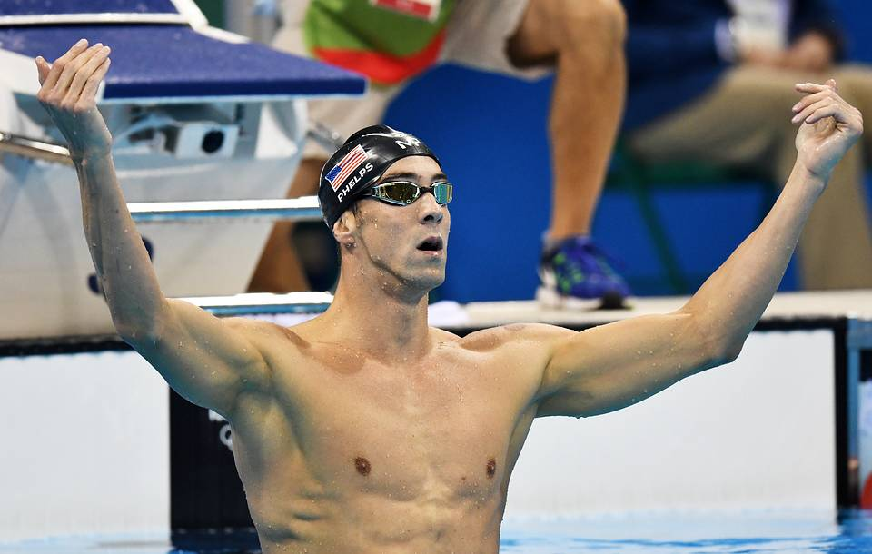

Самые выдающиеся олимпийцы в истории
Майкл Фелпс, США. 28 олимпийских медалей
Единственный в истории спорта 23-кратный олимпийский чемпион американский пловец Майкл Фелпс
является абсолютным рекордсменом по количеству наград в истории Олимпийских игр.
Он выступал на Олимпийских играх с 2004 по 2016 год. За свою спортивную карьеру этот пловец по прозвищу Балтиморская Пуля завоевал 23 золотые,
3 серебряные и 2 бронзовые олимпийские награды. Также на его счету 26 побед на чемпионатах мира (в 50-метровом бассейне).
Фелпс стал знаменитостью после Олимпийских игр 2004 года в Афинах, где 19-летний спортсмен заработал восемь медалей (из них шесть золотых).

В 2009 году пловец был дисквалифицирован из-за курения марихуаны и хотел завершить карьеру, однако вернулся,
и в 2012 году на Олимпиаде в Лондоне установил рекорд всех времен по количеству медалей, завоеванных на Олимпийских играх.
До этого момента мировое первенство по количеству медалей принадлежало советской спортивной гимнастке Ларисе Латыниной.
Лариса Латынина, СССР. 18 олимпийских медалей
Лариса Семёновна Латынина (девичья фамилия — Ди́рий; род. 27 декабря 1934 (86 лет), Херсон, Одесская область) — советская гимнастка,
девятикратная олимпийская чемпионка (1956, 1960, 1964), Заслуженный мастер спорта СССР (1956),
неоднократная чемпионка мира и Европы (1957—1962), СССР (1956—1964) в личных и командных соревнованиях, Заслуженный тренер СССР (1972),
Заслуженный работник физической культуры Российской Федерации.
Рекорд великой советской спортивной гимнастки Ларисы Латыниной – 18 медалей – продержался целых 48 лет!
Девятикратная олимпийская чемпионка, многократная чемпионка мира, Европы и СССР, она выступала на Олимпийских играх с 1956 по 1964 год.
Причем ее дебют на Олимпийских играх в Мельбурне в 1956 году сразу оказался невероятно успешным – советская
гимнастка открыла счет своей уникальной коллекции олимпийских наград, став абсолютной олимпийской чемпионкой!
Она выиграла золотые медали во всех дисциплинах: индивидуальное многоборье, опорный прыжок, брусья, бревно и вольные упражнения.

Рекорд Ларисы Латыниной по количеству выигранных медалей на олимпийских играх продержался 48 лет,
и лишь в 2012 году её рекорд был побит Майклом Фелпсом.
До 2012 года являлась самой титулованной спортсменкой на планете, имела наибольшую (по количеству) коллекцию
олимпийских медалей за всю историю спорта — 18 медалей (9 золотых, 5 серебряных и 4 бронзовые). Латынина известна также тем, что на чемпионате
Европы по спортивной гимнастике 1957 года выиграла все золотые медали.

Марит Бьерген, Норвегия. 15 олимпийских медалей
Норвежская лыжница Марит Бьерген является мировой рекордсменкой по количеству олимпийских наград на зимних Олимпийских играх.
Она выступала с 2002 по 2018 год. Первую олимпийскую медаль – серебряную – королева лыж завоевала в Солт-Лейк-Сити.
На Олимпиаде в Турине в 2006-м она выступила не так успешно, как от нее ждали, зато в 2011-м, на чемпионате мира,
проводившемся у нее на родине, на спортсменку пролился прямо-таки золотой дождь из медалей! История повторилась и в следующие годы,
вплоть до ее выступления на Олимпийских играх в южнокорейском Пхенчхане в 2018 году.
Правда, начиная с 2010 года спортсменка, на фоне высоких нагрузок страдавшая астмой физического напряжения,
уже принимала – с разрешения Всемирного антидопингового агентства – препараты с содержанием сальбутамола в лечебной дозировке.
Конкуренты спортсменки говорили прямо: это – допинг, который в Норвегии безнаказанно возведен в ранг лекарства.
Так или иначе, Марит Бьерген сегодня остается самой титулованной спортсменкой зимних Олимпийских игр за всю их историю.
У нее 8 золотых, 4 серебряных и 3 бронзовых медалей.
Милон Кротонский.
Многократный античный чемпион Олимпийских игр по борьбе.
Милон из Кротона - знаменитый борец в 6 веке до н.э. из города Кротон (сейчас Кротоне в Калабрии на юге Италии).
Был неоднократным победителем Олимпийских и Пифийских Игр.
С Милоном, как и с любым древнегреческим героем, связано много легенд.
По одной из них, на олимпийских играх он поднял на плечи четырёхлетнего быка и с ним четыре раза обошёл вокруг олимпийского ристалища,
а затем в течение одного дня съел всего этого быка целиком.
Первая победа Милона зафиксирована на 60-й Олимпиаде 540 года до н. э. Тогда юный дебютант завоевал первенство среди мальчиков.
Затем идет пробел. На 61-й Олимпиаде, сведения о которой носят отрывочный и неполный характер, имя Милона не упоминается.
Впервые как о победителе среди мужчин о нем заговорили на 62-й Олимпиаде 532 года до н. э. Это было начало триумфального шествия
Милона Кротонского по крупнейшим спортивным аренам Древней Греции. В течение последующих 16 лет он неизменно становится
победителем Игр. И в 516 году до н. э. в возрасте 39 лет одерживает очередную победу. Но и на этом ветеран не успокоился.
Спустя четыре года он вновь вышел на олимпийское ристалище. Дойдя до финала, в упорнейшей и тяжелейшей схватке Милон уступает
лавровый венок своему молодому земляку Тимасифею, к слову, в дальнейшем не отличавшемуся в Олимпии. Таким образом, Милон Кротонский
является чемпионом 5-ти античных Олимпийских Игр по борьбе.
Завершив спортивную карьеру, Милон под влиянием Пифагора увлекся философией и политикой.
Смерть Милона, по легенде, также не была простой. Дата его смерти неизвестна, но, по словам Страбона и Павсания
(греческие историки и географы), Милон шел по лесу, когда он наткнулся на ствол дерева, в который были вставлены клинья,
чтобы расколоть его. Вероятно, в качестве демонстрации своей силы, Милон вставил руки в щель, чтобы разорвать дерево.
Клинья выпали из расщелины, и дерево стиснуло руки Милона. Не в силах освободиться, борец был съеден волками.
Смерть Милона из Кротона